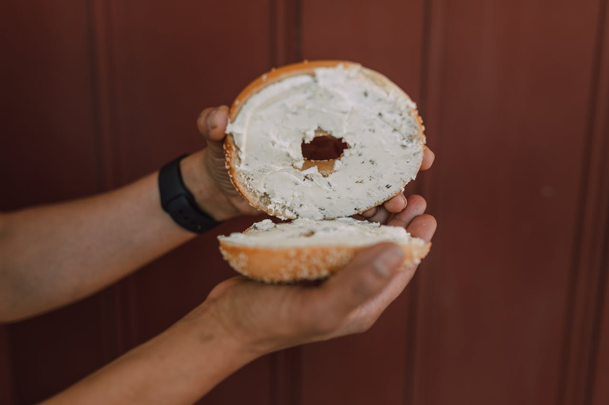

How to make a Bagel

A soft circular piece of bread similar to the doughnut
Ingredients
- Bagel
-
Condiments (optional):
- Peanut Butter
- Jam
- Sour Cream
- Slice of Cheese
Instructions (slighter more complicated than a slice of bread)
- Acquire a toaster and plug it in
- Put your bagel in any slot
-
Set your desired toastiness setting (will improve with practice)
- Push the start button and go find your condiments
- Once the bread has elevated place it on a plate
-
Spread your condiments if desired and viola you have a bagel